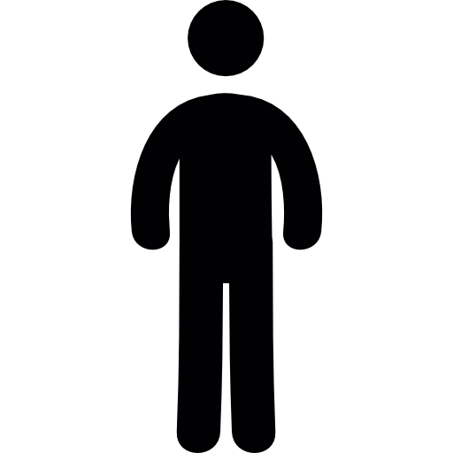

Gallup Wave 4 Survey Preview — March 2026
Contents
- Parent: Intro
- Parent: Well-being
- Parent: AI Screening
- Parent: AI Use Context
- Parent: Agency & Meaning
- Parent: Dependency
- Parent: Identity
- Parent: Polarization
- Child: Well-being
- Child: Close Friends
- Child: AI Screening
- Child: AI Frequency (Productivity)
- Child: AI Frequency (Social)
- Child: Adoption & Payment
- Child: AI Influence (Social)
- Child: AI Influence (Curiosity)
- Child: AI Influence (Confidence)
- Child: Peer AI Use
- Child: AI Use Strategies
- Child: AI Use Context
- Child: Agency & Meaning
- Child: Dependency
- Child: Identity
- Child: Creativity
- Child: Social Anxiety
- Child: Loneliness
- Child: Pavani / Polarization
- Child: Policy
- Child: Life Events
- Child: Invitation
- Child: Demographics
Parent Survey

Intro
This survey is intended to follow another survey you completed a few months ago. It will help us understand your thoughts about artificial intelligence (AI).
During the survey, you might notice a few questions that look familiar from the last survey, but that's on purpose. We are interested in what's changed since the last time you filled this survey out.

Well-being
Please imagine a ladder with steps numbered from zero at the bottom to ten at the top. The top represents the best possible life for you and the bottom represents the worst possible life for you. On which step of the ladder would you say you personally feel you stood during the past 30 days?
012345678910

AI Screening
The next questions are about having conversations with AI chatbots like ChatGPT, Claude, or Snapchat My AI. We don't mean Siri, autocorrect, or Google search AI summary.
Have you ever used AI chatbots?
If ever used AI = Yes
In the past 30 days, have you used AI chatbots?

AI Use Context
Many people use AI to be more productive or get things done. We want to understand how you use AI. Please select all of the following that you have used AI for.
Which of the following have you used AI chatbots for? Select all that apply.
- Drafting or editing a professional email
- Preparing for a meeting or presentation
- Summarizing documents, articles, or reports
- Writing a report, proposal, or memo
- Brainstorming ideas for a project
- Analyzing or making sense of data
- Coding or solving technical problems
- Researching a work-related topic
- Learning a new skill for work
- Other work use: [text box]
- I have never used AI for work or anything productive
Routing: Checked any productive use → Path A (work) | Only checked "never" → Path B (personal) | Never used AI → Path C (hypothetical)
Agency & Meaning
Scale: Strongly disagree / Disagree / Slightly disagree / Slightly agree / Agree / Strongly agree
Path A: Uses AI for work
Path B: Personal only
Path C: Never used AI
The next questions are about how, if at all, using AI chatbots has affected your experience of doing work.
Process Agency
When I use AI, I still feel in control of how my work gets done.
When I use AI, the final product still feels like it's mine.
When I use AI, I feel like the work still reflects my own thinking and approach. TENTATIVE
Outcome Agency
AI helps me achieve work goals I couldn't reach on my own.
AI makes me feel like I can take on bigger challenges at work.
AI helps me produce higher-quality work than I could on my own. TENTATIVE
Meaning
Because of AI, my work feels less meaningful than it used to.
AI does parts of my work that I actually care about doing myself.
I take less pride in my work when AI helps with it.
You mentioned you haven't used AI for work. The next questions are about how, if at all, using AI chatbots has affected your experience of everyday tasks and personal projects.
Process Agency
When I use AI, I still feel in control of how things in my personal life get done.
When I use AI for personal tasks, the result still feels like it's mine.
When I use AI, I feel like what I do still reflects my own thinking and approach. TENTATIVE
Outcome Agency
AI helps me accomplish personal goals I couldn't reach on my own.
AI makes me feel like I can take on bigger challenges in my personal life.
AI helps me get better results in my personal life than I could on my own. TENTATIVE
Meaning
Because of AI, things I do in my personal life feel less meaningful than they used to.
AI handles personal tasks that I actually care about doing myself.
I take less pride in what I accomplish when AI helps with it.
You mentioned you haven't used AI chatbots. We're interested in what you think using AI would be like.
Process Agency
If I used AI, I think I would still feel in control of how my work gets done.
If I used AI, I think the final product would still feel like it's mine.
If I used AI, I think the work would still reflect my own thinking and approach. TENTATIVE
Outcome Agency
If I used AI, I think it could help me achieve work goals I can't reach on my own.
If I used AI, I think I could take on bigger challenges at work.
If I used AI, I think it could help me produce higher-quality work than I can on my own. TENTATIVE
Meaning
If I used AI, I think my work would feel less meaningful.
If I used AI, I think it would do parts of my work that I actually care about doing myself.
If I used AI, I think I would take less pride in my work.

Dependency
Path A: Work
Path B: Personal
If all AI tools suddenly disappeared, how well could you do your typical work?
Compared to 6 months ago, my ability to do work without AI has...
If all AI tools suddenly disappeared, how well could you handle your typical everyday tasks?
Compared to 6 months ago, my ability to handle everyday tasks without AI has...
Identity & Motivation
How much do you enjoy your work?
How important is your work to who you are as a person?
How much do you pride yourself on your work?
How much of your work requires you to come up with your own ideas or approaches?

Polarization
Do you think AI chatbots will make political disagreements in America better or worse?
Child / Gen Z Survey
Well-being
Please imagine a ladder with steps numbered from zero at the bottom to ten at the top. The top of the ladder represents the best possible life for you and the bottom of the ladder represents the worst possible life for you. On which step of the ladder would you say you personally feel you stood during the past 30 days?
012345678910

Close Friends
Please think of a close friend as someone you can talk with about things that are most important to you, including sensitive issues. Overall, about how many close friends would you say you have?
AI Screening
The next questions are about having conversations with AI chatbots like ChatGPT, Claude, or Snapchat My AI. We don't mean Siri, autocorrect, or Google search AI summary.
Have you ever used AI chatbots?
If ever used AI = Yes
In the past 30 days, have you used AI chatbots?
AI Usage Frequency: Productivity
Scale: Never / Once / Two or three times / Once a week / Several times per week / Once a day / Several times a day / Almost constantly
During the past 30 days, about how often did you ask an AI chatbot something instead of just Googling it?
During the past 30 days, about how often did you use AI chatbots to create an image or video?
During the past 30 days, about how often did you use AI chatbots to help you with your work?
During the past 30 days, about how often did you use AI chatbots to help you with writing?
During the past 30 days, about how often did you use AI chatbots to help you with math?
AI Usage Frequency: Social & Personal
Same 8-point frequency scale
During the past 30 days, about how often did you use AI chatbots as if they were a friend? For example, to talk about your day or just have a personal conversation.
During the past 30 days, about how often did you use AI chatbots as if they were a boyfriend/girlfriend?
During the past 30 days, about how often did you use AI chatbots to get advice about something personal to you, such as advice about relationships or life decisions?
During the past 30 days, about how often did you use AI chatbots for your work when you were specifically told not to?

Adoption & Payment
When did you first start using AI chatbots?
Do you pay for an AI chatbot subscription (e.g., ChatGPT Plus)?
AI Influence: Social Behavior
The next questions are about how much, if at all, AI chatbots have influenced your life during the past 30 days.
Scale: Much less ... than I used to / A little less / The same / A little more / Much more
Because of AI chatbots, I talked to my friends during the past 30 days...
Because of AI chatbots, I used social media during the past 30 days...
Because of AI chatbots, I used Google search during the past 30 days...
AI Influence: Curiosity & Effort
Because of AI chatbots, during the past 30 days I think I was...
Because of AI chatbots, during the past 30 days I think I was...
AI Influence: Confidence & Interest
Because of AI chatbots, were you more or less confident when you talked to people during the past 30 days?
Because of AI chatbots, were you more or less interested in talking to people during the past 30 days?
Peer AI Use
How many of your friends interact with AI chatbots as if they were a friend? For example, to talk about their day or just have a personal conversation. Please give your best guess.
AI Use Strategies
The next questions are about how you use AI chatbots to get things done — not for advice or personal reasons. People use AI in many different ways. There are no right or wrong answers — we want to know what you actually do.
Scale: Never / Rarely / Sometimes / Often / Always
Coach
Before asking AI for help, I try to work through the task on my own first.
I ask AI follow-up questions to make sure I really understand what it told me.
Before I use what AI gives me, I check whether it's correct.
Crutch
I tend to use what AI gives me without making changes.
I use AI to avoid tasks I find difficult or challenging.
I find it hard to get started on tasks without asking AI first.
AI Use Context
Many people use AI to be more productive or get things done. We want to understand how you use AI. Please select all of the following that you have used AI for.
Which of the following have you used AI chatbots for? Select all that apply.
- Drafting or editing a professional email
- Preparing for a meeting or presentation
- Summarizing documents, articles, or reports
- Writing a paper, report, or assignment
- Brainstorming ideas for a project
- Analyzing or making sense of data
- Coding or solving technical problems
- Researching a school/work-related topic
- Learning a new skill for school/work
- Solving a homework or class assignment age < 18
- Studying or reviewing material for an exam age < 18
- Other school/work use: [text box]
- I have never used AI for school/work or anything productive
Routing: Checked any productive use → Path A (work/school) | Only checked "never" → Path B (personal) | Never used AI → Path C (hypothetical)
Agency & Meaning
Scale: Strongly disagree / Disagree / Slightly disagree / Slightly agree / Agree / Strongly agree
Path A: School/Work
Path B: Personal
Path C: Never used AI
The next questions are about how, if at all, using AI chatbots has affected your experience of doing work.
Process Agency
When I use AI, I still feel in control of how my work gets done.
When I use AI, the final product still feels like it's mine.
When I use AI, I feel like the work still reflects my own thinking and approach. TENTATIVE
Outcome Agency
AI helps me achieve school/work goals I couldn't reach on my own.
AI makes me feel like I can take on bigger challenges at school/work.
AI helps me produce higher-quality work than I could on my own. TENTATIVE
Meaning
Because of AI, my work feels less meaningful than it used to.
AI does parts of my work that I actually care about doing myself.
I take less pride in my work when AI helps with it.
You mentioned you haven't used AI for school/work. The next questions are about how, if at all, using AI chatbots has affected your experience of everyday tasks and personal projects.
Process Agency
When I use AI, I still feel in control of how things in my personal life get done.
When I use AI for personal tasks, the result still feels like it's mine.
When I use AI, I feel like what I do still reflects my own thinking and approach. TENTATIVE
Outcome Agency
AI helps me accomplish personal goals I couldn't reach on my own.
AI makes me feel like I can take on bigger challenges in my personal life.
AI helps me get better results in my personal life than I could on my own. TENTATIVE
Meaning
Because of AI, things I do in my personal life feel less meaningful than they used to.
AI handles personal tasks that I actually care about doing myself.
I take less pride in what I accomplish when AI helps with it.
You mentioned you haven't used AI chatbots. We're interested in what you think using AI would be like.
Process Agency
If I used AI, I think I would still feel in control of how my work gets done.
If I used AI, I think the final product would still feel like it's mine.
If I used AI, I think the work would still reflect my own thinking and approach. TENTATIVE
Outcome Agency
If I used AI, I think it could help me achieve school/work goals I can't reach on my own.
If I used AI, I think I could take on bigger challenges at school/work.
If I used AI, I think it could help me produce higher-quality work than I can on my own. TENTATIVE
Meaning
If I used AI, I think my work would feel less meaningful.
If I used AI, I think it would do parts of my work that I actually care about doing myself.
If I used AI, I think I would take less pride in my work.
Dependency
Path A: Work
Path B: Personal
If all AI tools suddenly disappeared, how well could you do your typical schoolwork/work?
Compared to 6 months ago, my ability to do schoolwork/work without AI has...
If all AI tools suddenly disappeared, how well could you handle your typical everyday tasks?
Compared to 6 months ago, my ability to handle everyday tasks without AI has...
Identity & Motivation
How much do you enjoy your schoolwork/work?
How important is your schoolwork/work to who you are as a person?
How much do you pride yourself on your schoolwork/work?
Creativity
How much of your work requires you to come up with your own ideas or approaches?
Social Anxiety
For these next three statements, please select the answer that best describes how each situation makes you feel.
Scale: Very nervous / Somewhat nervous / Neither nervous nor relaxed / Somewhat relaxed / Very relaxed
Going to a party makes me feel...
Being the center of attention makes me feel...
Talking with people I don't know very well makes me feel...
Loneliness
During the past 30 days, how lonely did you feel?
During the past 30 days, how often did you feel like you didn't have any friends?
During the past 30 days, how often did you feel left out?
Pavani / Polarization
If age < 18
Which do you think would be more valuable for students your age: AI tools that give individual students personalized help, or AI tools that help students work together?
If age 18-28
Do you think AI chatbots will make political disagreements in America better or worse?
Policy
Does your school or employer have a policy about AI chatbot use?
If they have a policy
In the last 12 months, has this policy changed?
If policy changed = Yes
Approximately when did the policy change? (e.g., June 2025)
Text box
If policy changed = Yes
Briefly, what changed?
Text box

Life Events
In the last 12 months, have you experienced a breakup?
If breakup = Yes
Please provide the approximate date (e.g., June 2025):
Text box
In the last 12 months, have you relocated to a new city or neighborhood?
If relocated = Yes
Please provide the approximate date (e.g., June 2025):
Text box
Invitation
We're developing an AI coach to help people become better writers. This app is not yet open to the public. Would you be interested in trying it?
This is a real invitation. If you say yes, we'll reach out with instructions — there's no cost or obligation.
Demographics
What is your total annual household income, before taxes?
Which of the following best describes your own feelings about your household's income these days?
Are you currently enrolled in higher education?
If enrolled = Yes
Which of the following are you currently enrolled in? Select all that apply.
What is the highest level of school you have completed or the highest degree you have received?